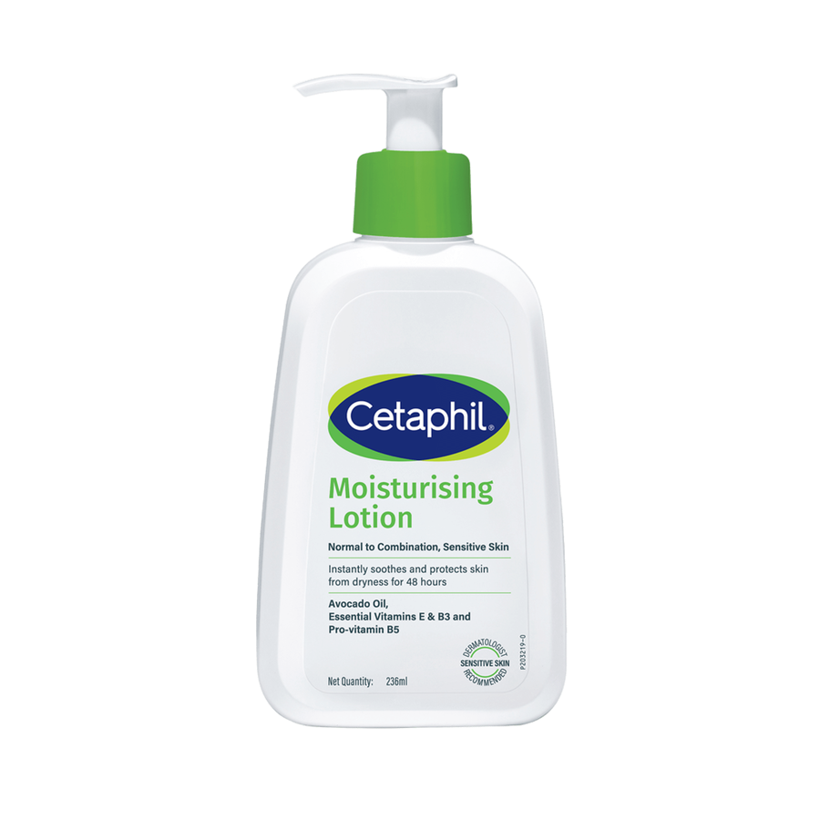
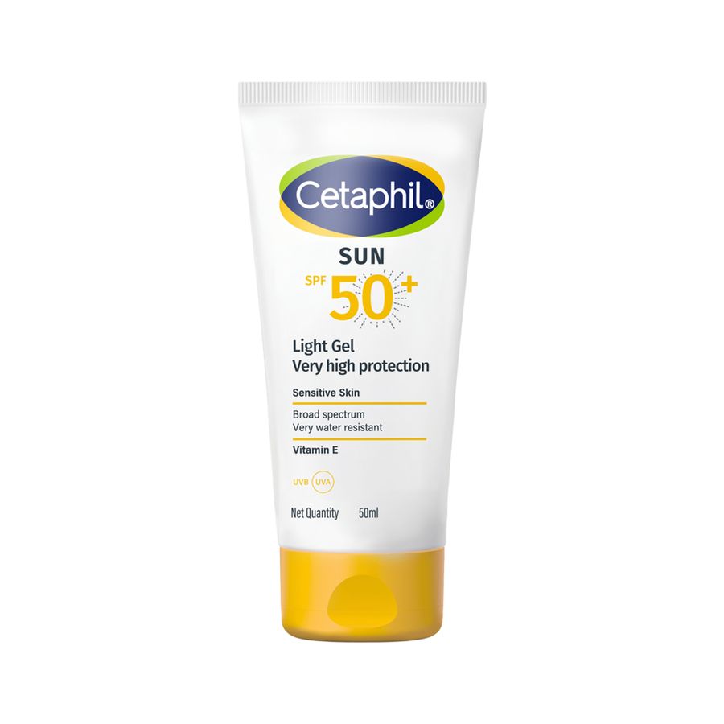
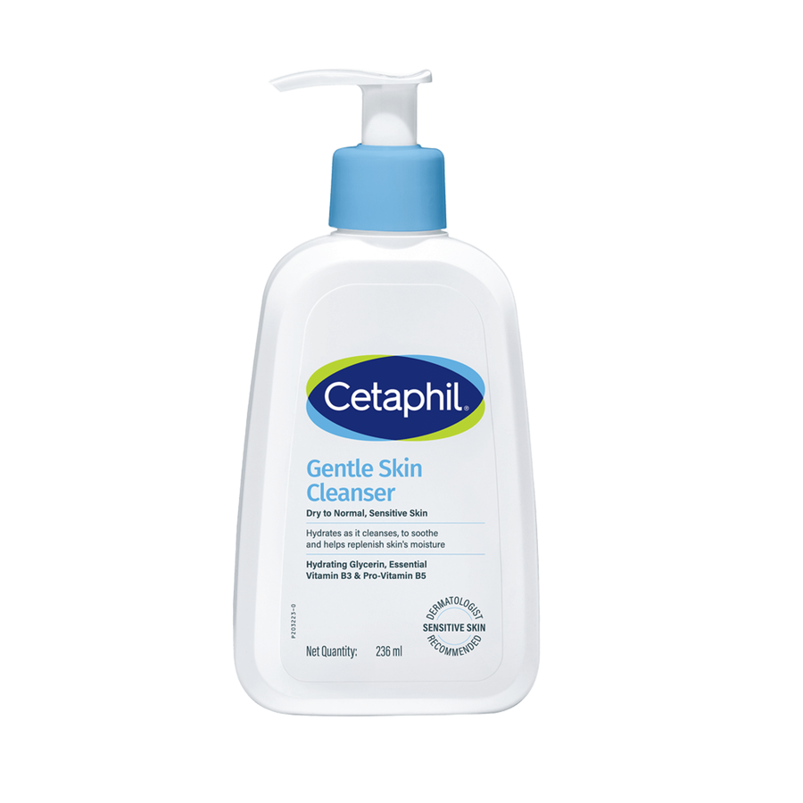
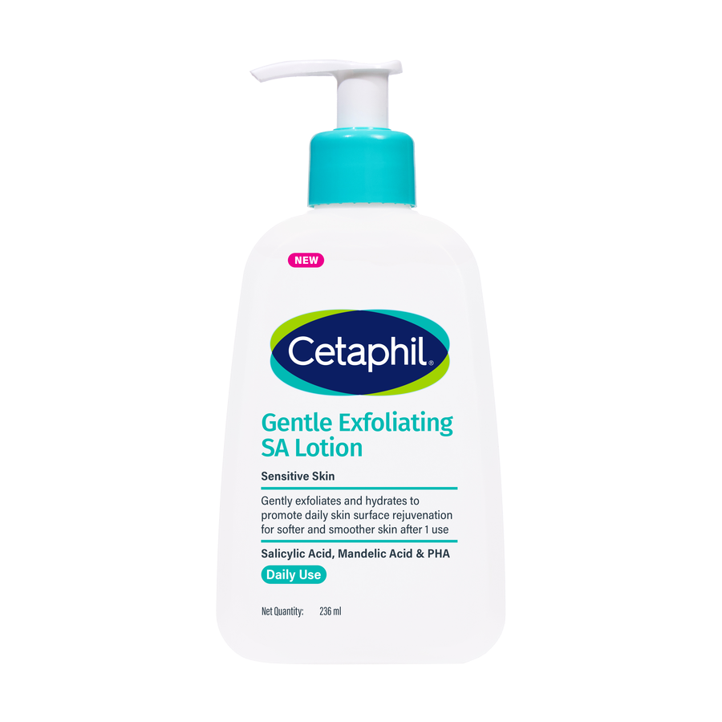

Routine skincare focuses on keeping it clean, balanced, protected, and free from irritation. Daily skincare increases skin elasticity and regeneration, thus improving overall skin well-being.
Before diving into a skincare routine, let us take a moment to recognize and comprehend your skin type. The most widely used method is the Baumann Skin type indicator (BSTI), which divides the skin as follows;
->Oily or dry
->Sensitive or resistant
->Pigmented or non-pigmented
Wrinkled or tight
Crafting an effective skincare routine requires customization to accommodate individual factors such as age, skin type, and any underlying skin conditions.
Ever wondered about the skincare secrets dermatologists swear by to keep their skin glowing? Here, dermatologists spill the beans on essential skincare tips they not only recommend to their patients but also personally use themselves.
Many of the environmental impurities and cosmetic products are not water soluble, so washing the skin with simple water would not be sufficient to remove them. This is where a reliable cleanser steps in to effectively remove these impurities. A fine balance needs to be maintained between skin cleansing and the preservation of its properties.
A decent cleanser need to be gentle, offer hydrating properties, and be readily removed with water. While selecting a cleanser, choose one based on your skin type. Synthetic detergents (Syndet) and lipid-free cleansers have the least irritancy potential.
In people with dermatological disorders and sensitive skin, gentle cleansing is important. It is better to avoid classic soaps and cleansers containing alcohol, astringents, and abrasives. A nonionic, fragrance-free dermatologic bar or liquid cleanser with good rinsability is the preferred cleanser.
It is recommended to cleanse your face twice daily - once in the morning upon waking and again before bedtime.
Active ingredients are formulated to address specific skin concerns and enhance overall skin health. Depending on your skin concerns, such as acne, dark spots, wrinkles, and pigmentation, you can select specific active ingredients to incorporate into your skincare routine.
AHA products effectively remove dead skin cells, dirt, and oil build-up, allowing active ingredients to penetrate deeply and work. BHAs can enhance hydration and promote a more even skin tone. BHA products also reduce the appearance of blemishes and unclog pores.
Retinol has been clinically proven to speed up cellular turnover while slowing down the breakdown of collagen in the skin. This results in the reduction of fine lines and wrinkles, ultimately improving the overall appearance and texture of the skin.
Do not combine two or more acids within the same session, resulting in severe irritation. Similarly, certain combinations will render one or more ingredients ineffective. Exercise caution when trying products on acne-prone or sensitive skin as these could potentially cause irritation or exacerbate acne. Before trying out active skincare ingredients, always consult a dermatologist who can assess your skin and recommend the most effective options tailored to your needs.
Hydration smoothens the skin surface and also makes the skin soft, more flexible, and adaptable. Including a quality moisturizer in your skincare routine is essential. Various formulations of moisturizers are available in the market. A gel is water-based and tends to feel lighter on the skin than a lotion. A cream is thicker and has higher oil content than a lotion and gel, making it more hydrating. An ointment is the thickest of all, making it the most effective in remedying dry skin.
Choosing the right moisturizer depends on your skin type and the severity of dryness you are experiencing.
Normal skin: If you're experiencing seasonal dryness in otherwise normal skin, lotion is sufficient for most younger people.
Dry skin: If your skin tends to be dry, creams are going to add more moisture to the skin and preserve more water
Oily skin: For people with shiny and greasy skin, It is suggested to skip moisturizer altogether or choose a lighter option like gel.
Combination skin: If your skin is dry in some areas and oily in others, moisturize the dry spots and skip the oily areas.
For optimal hydration, apply moisturizer immediately after showering or wetting your skin. Moisturizers are more effective when applied to damp skin, as they help trap moisture and prevent evaporation, keeping the skin well-hydrated.
You need to choose moisturizers depending on the site of application
Facial moisturizers: facial moisturizers play a distinct role in daily skincare routines. They're formulated to be non-greasy and non-comedogenic, prioritizing aesthetics and delivering maximum skin benefits. Silicone-based derivatives are particularly suitable for oily skin types.
It's essential to safeguard your skin from the sun's harmful rays by seeking shade when possible, wearing sun-protective clothing, and consistently applying broad-spectrum sunscreen. These practices should be integrated into your daily routine, irrespective of your skin tone. For the best protection, apply a broad-spectrum, water-resistant sunscreen with an SPF of 30 or higher to all skin not covered by clothing.
Since no sunscreen can block 100% of the sun's UV rays, it's also important to seek shade and wear sun-protective clothing when outdoors, a wide-brimmed hat, and sunglasses with UV protection, when possible. Like any other skincare product, you should use a sunscreen formulated for your skin type. If you have oily acne-prone skin, look for a non-comedogenic gel-based sunscreen. Women with darker skin tones may prefer tinted sunscreen options. Many tinted sunscreens are formulated to avoid leaving a white cast on the skin.
Sunscreen should be applied on the skin after other skin care products and beneath your makeup. Always remember to apply sunscreen at least 30 minutes before heading outdoors. It should be reapplied every 2 hours, and after swimming, vigorous activity, excessive perspiration, or toweling.
This article is only for general patient information and is not intended for self medication. There is no legal liability of IADVL arising out of any adverse consequence to the patient. Subsequent to its use for self treatment of the disease images adjust for the depiction of the condition and is not to be used for any other purpose.

For normal to combination skin, sensitive skin

High SPF 50+ protection against UV & infrared rays

For dry to normal, sensitive skin

Softer and smoother skin.